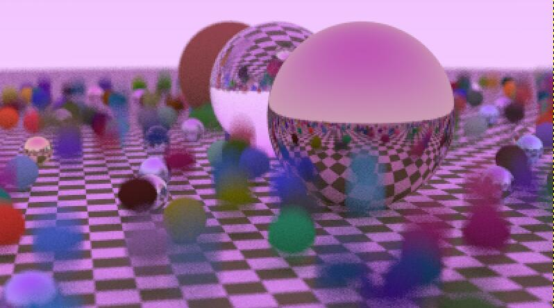

Rendering Developer of UTMIST
Email: chenzheng.chen@mail.utoronto.ca
Phone: +1 365 993 0207

Ray Tracing Renderer
Zheng Chen
Working on it.
Github
 PyZelda
PyZelda
Zheng Chen
2D RPG pixel game written in Python using Pygame library
Github
 Breakout Game
Breakout Game
Zheng Chen
An enhanced version of the classic arcade game 'Breakout', utilizing OpenGL and C++ for basic graphical rendering on the GPU
Github
 Korotu Plant Identification Website
Korotu Plant Identification Website
Zheng Chen
Collaborated with Korotu Inc. to develop an innovative plant identification website
Github
 My Cat in Spinning Boxes
My Cat in Spinning Boxes
Zheng Chen
A dynamic 3D scene of spinning boxes with cat imagery, rendered using OpenGL.
Github
Zheng Chen is still building his website.